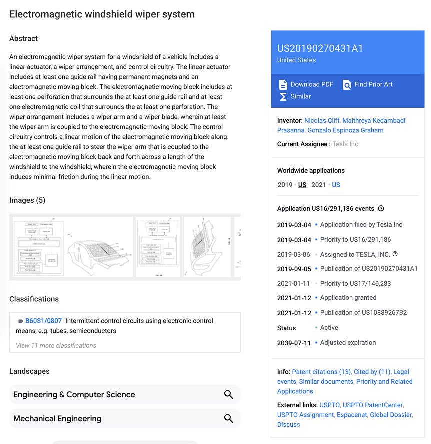

My 1st US Patent (2019)
While studying at Waterloo, I had the privilege of completing multiple internships at Tesla. The first day of my first internship, the company was all hands on deck trying to ramp up the Model X and ship the Model S refresh. The last day of my last internship, we had shipped Model Y and we were working on the announced Cybertruck and other projects not yet released. In between I got to be part of the Model 3 SOP and ramp up, and the Semi launch. Looking back, I had no idea how impactful these products were going to be.
During one of these internships, I got to work on an electromagnetic windshield wiper system for an unreleased program. Such a system has many advantages but the main one being maximizing the swept area without the need of complex mechanical linkages. Without saying too much, you might be able to imagine why you’d want to sweep a large area in an autonomous vehicle: there are areas that must be swept by law in the field of view of the human passenger/driver, and then there are areas where the cameras are located that you don’t have to sweep by law but want to do so to maintain proper system operation.
We were granted a US patent for this work, US10889267B2. Once the filing became public and again after the patent issued, it picked up a lot of automotive and tech press, plus plenty of armchair speculation online. My lips are sealed on anything that did not ship, but the pieces below are representative of how the invention read from the outside.
Press and commentary
- MotorTrend — Tesla Patents Electromagnetic Windshield Wiper—Possibly for the Cybertruck
- TESLARATI — Tesla’s patented magnetic Wipers demonstrated in concept video
- Car and Driver — Tesla’s a Game Changer When It Comes to Windshield Wipers
- Fox News — Cleaner sweep? Tesla’s new windshield wiper tech gets a patent
- CleanTechnica — New Tesla Patent: An Electromagnetic Windshield Wiper System